Motivation Logika
Logika - The Basic Automated Deduction Process
We have approached the faulty fragment by a method of program debugging:
We have stated which result we expected and
then traced values of variables occuring during the execution of the fragment
until we have found the error, e.g, the erroneous assigment to variable y.
Note, that we have traced values forwards following the sequence of assigments
but that have stated the expected values backwards starting from the result.
This is a rather natural way to approach reasoning about programs
as the information about the expected values propagates backwards from the result
and the information about values propagates forward along the executed assignments.
(John: it seems like we should use phrases above like “We state our intentions/expectations” and also “we consider the facts that must be true at/after each statement in the program”, and “when we try to reason about whether the assertion holds or not, we see if the facts at that point will cause the assertion to be true”.)
-
illustrate tracing of values of variables with light bulbs, and illustrate logika checking of assertions for val-based example.
-
explain what we mean by fact: a condition/expression referencing the value of program variables (which connects more subtely to the language of expressions)
-
explain using lightbulbs the deduce steps in comments.
Immediate Fact Accumulation and Display
As Logika processes a code, it collects facts that it discovers by moving forward step-by-step through the code. Some of the accumulated facts are immediately apparent from the structure of each program statement (we will refer to these as immediate facts). Others are the result of deductions that it has made by calling the underlying SMT solvers (we will refer to those as deduced facts). Logika can display the facts that it has accumulated at any point in the program to provide hints about how to systematically reason about the program. Hints can be viewed by clicking on the lightbulb icon in the IVE editor margin as shown in the figure above.
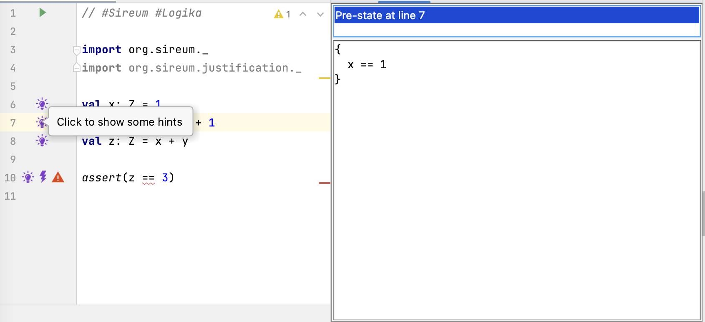
In the figure above, the developer has clicked on the lightbulb at Line 7, which causes the IVE to open the window panes on the right to display the accumulated facts at that point in the program. Logika organizes its information in terms of the pre-state of a statement (the state of execution immediately before a statement) and a post-state (the state of execution immediately after a statement).
At the point immediately before Line 7, only the assignment to x at Line 6 has executed. Thus, the only accumulated fact in the pre-state of Line 7 is the immediate fact x == 1.
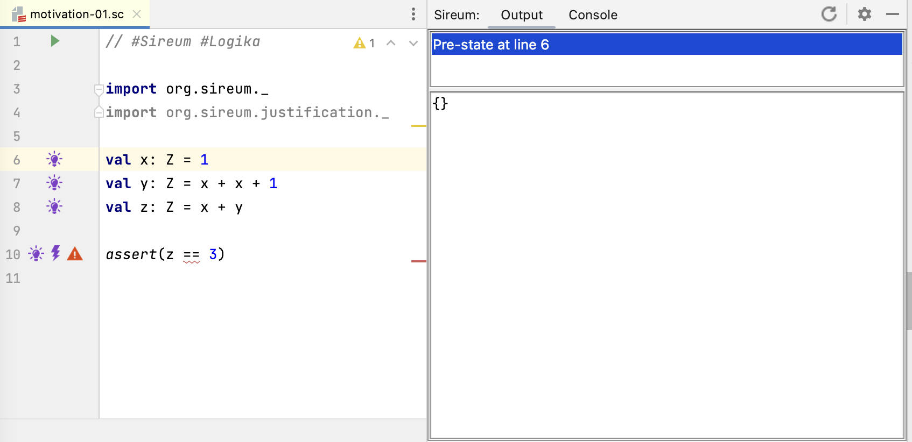
In contrast, clicking on the lightbulb at Line 6 reveals that Logika has no knowledge about the program’s variables, because none have been assigned yet.
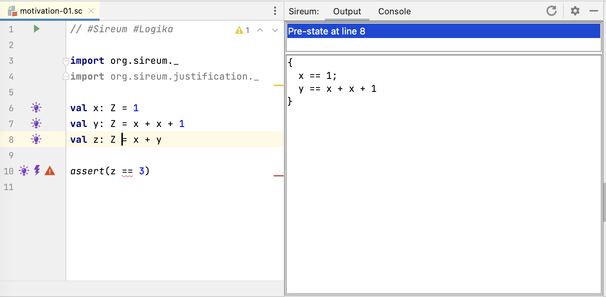
Clicking on the lightbulb at Line 8 shows the facts known in the pre-state of Line 8 (i.e., before the assignment to z at Line 8 and immediately after the assignment to y in Line 7). The facts include both the immediate facts that we have from the assignment to x at Line 6 as well as the assignment to y at Line 7.
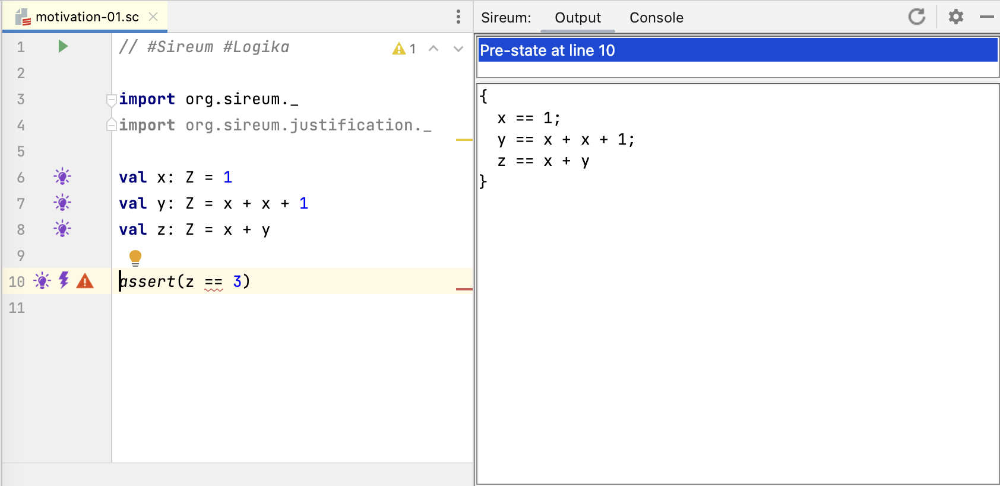
At Line 10, the lightbulb information indicates that Logika has immediate facts from the the assignments to x, y, and z.
Deductions and SMT Interaction
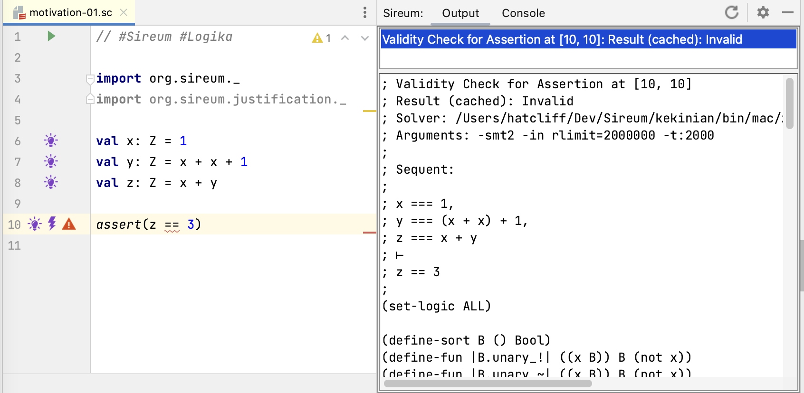
At Line 10, we see two new margin annotations – a lightning bolt and an error marker.
This indicates that Logika has made an automated deduction (in this case, trying to verify that the assertion holds) that requires interactions with its underlying SMT solvers. Logika calls these interactions “summonings” because the power of SMT is being “summoned” to make a deduction that can’t be carried out using simple syntactic manipulation of the facts that it has accumulated about the program. Clicking on the lightning bolt shows the details of the summoning. The most useful information to the developer is the sequent:
; Sequent:
;
; x === 1,
; y === (x + x) + 1,
; z === x + y
; ⊢
; z == 3
Intuitively, Logika is asking the SMT solvers, “Assuming the facts x === 1, and y === (x + x) + 1 hold, can you prove z === x + y?.
The sequent is a traditional notation from logic that has the following structure:
<assumption-1>
...
<assumption-n>
⊢
<conclusion>
A sequent is a logical claim that, under the assumption that assumptions 1 through n hold, the conclusion can be proved. Note that the assumptions in a sequent are often called antecedents and the conclusion is often called the consequent. Logika uses this notation to indicate what “question” it is asking of the SMT solvers, i.e., it is asking the SMT solvers, does the given sequent hold?
Other information in the Output pane
; Validity Check for Assertion at [10, 10]
; Result (cached): Invalid
indicates the purpose of the summoning (Logika is trying to determine if the assertion expression at Line 10, Column 10 is valid) and the result of the SMT query (the provide sequent, and thus the assertion at Line 10 is invalid).
Logika summoning results can be: Valid, Invalid, Don’t Know, or Time Out. We’ll discuss the later two later, but intuively they both indicate that the SMT solver can’t determine if the sequent holds or not.
The rest of the information
(set-logic ALL)
(define-sort B () Bool)
(define-fun |B.unary_!| ((x B)) B (not x))
...
is an encoding of Logika’s knowledge about the program and the sequent into the standardized SMT2 language of the SMT solvers. The display of the encoding is meant for tool experts. We don’t explain it here and we don’t refer to it in these course notes, but an overview can be found in (XXXXX To be done XXXXXX).
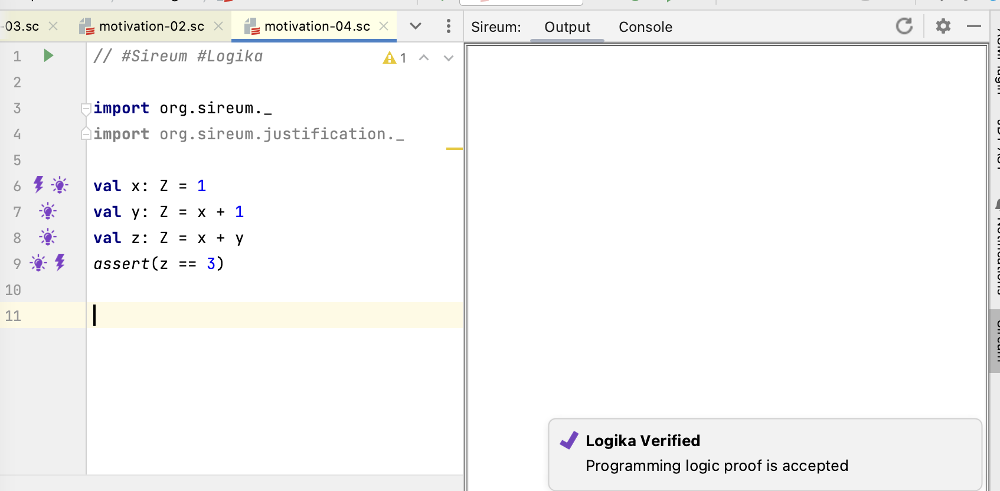
If we correct the mistake in the assignment to y, the problem marker disappears and Logika pops up a message in the lower right corner reporting that it has verified our program. In general, a
report of “Logika Verified” means that, for all possible executions of the program
- all assertions hold,
- there will never be a run-time error (e.g., a divide-by-zero or an array/sequence out-of-bounds index), and
- the computations indicated by the program code satisfy any included Logika contracts.
That these results hold for all possible executions is an amazing testimony to power of logic: without any testing (experimentation) on the program, the properties are established by automated deduction alone. TBD: Expand on this, or eventually connect it to some broader philosophical discussion on knowledge discovering by experimentation vs knowledge discovering by deduction.
Deducing Facts Expressed as Assertions
When we illustrated manual reasoning, we added assertion statements interleaved with our assignment statements, as illustrated below.
1val x: Z = 1
2assert(x == 1)
3val y: Z = x + 1
4assert(x == 1)
5assert(y == 2)
6val z: Z = x + y
7assert(z == 3)
The assertions stated various facts that we believed to be the consequence of execution to that point. In our mental reasoning, this gave us confidence that the execution was proceeding according to our intent, and we inferred that the execution resulted in additional properties such as y == 2 and y == 3 that were not immediately captured in the program text.
There are several methodologies that we can follow with Logika to reason about the execution at intermediate program points and to confirm at those points that our expectations about the execution are met.
The first approach is simply to let Logika process the interleaved assertions as in the code above. It’s good to understand this option, so we will start with it. Later we’ll consider another approach that is more flexible and that doesn’t unnecessarily add executable assertions to our generated code.
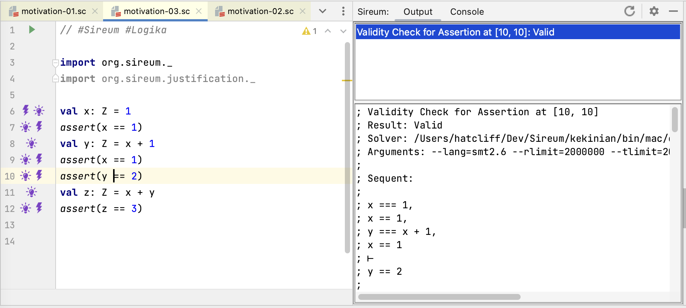
The absence of error markers in the figure above illustrates that Logika verified our code. The assert(y == 2) at Line 10 is the first place where Logika had to prove a claim that wasn’t immediately apparent from the code text. Clicking on the lightning bolt at Line 10 shows the sequent used to prove the claim: the antecedents of the sequent include accumulated immediate facts, and the consequent is the expression that must be true for Logika to verify the assertion.
Just as we gathered confidence from the result of interleaved assertions in our manual reasoning, Logika will add the deduced fact y == 2 to its accumulated facts as it continues to the next line in the program.
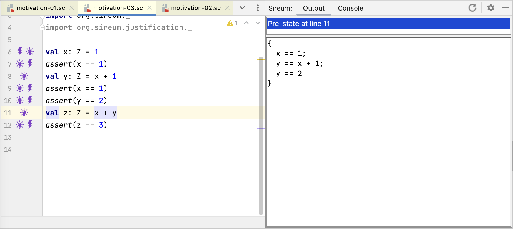
The figure above shows the accumulated facts in the pre-state of Line 11, i.e., the point immediately after assert(y == 2). In addition to the immediate facts deduced from the program text, the accumulated facts include the deduced fact y == 2.
Discovering Possible Run-time Exceptions
In addition to checking the validity of assertions, Logika checks for possible run-time exceptions (see XXXX for a complete list).
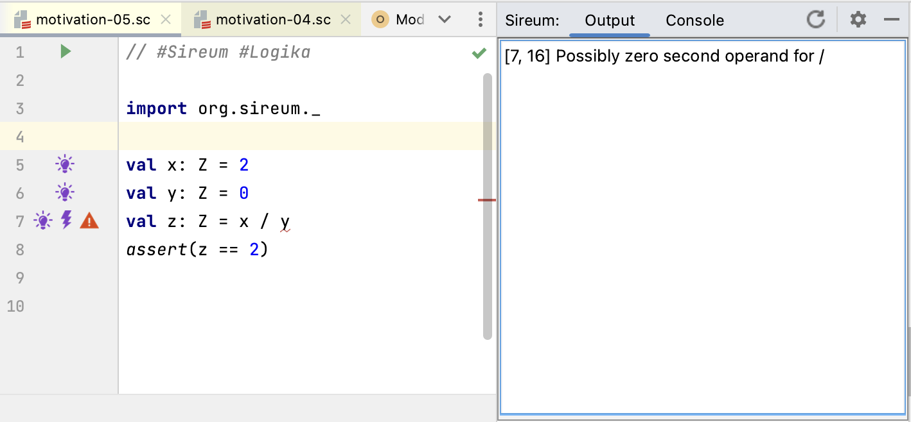
Logika flags the divide-by-zero show above with a red error marker, and clicking on the marker indicates the error in the Output pane.
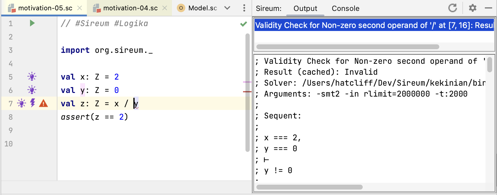
Clicking on the lightning bolt shows the sequent that Logika uses to try to prove the absence of the run-time exception, i.e., given the facts that have been accumulated so far, can it be proven that divisor argument is non-zero.
** Possible Exercise: load the motivation-09.sc example (which fixes the divide by zero error) and click through margin annotations **.
Representing Unknown Values
Up to this point, we have only used Logika to examine facts about immutable variables whose values can be completely determined or can be stated in terms of the values of other variables or mathematical expressions. Often our programs have variables that, at least at some points of the program, we don’t know anything about. From Logika’s point of view “don’t know anything about” means that Logika doesn’t have any constraints (either immediate facts or derived facts) on the variable. For example, at the end of the program fragment below,
val m: Z = randomInt()
val n: Z = randomInt()
val z: Z = m + n
we know something about z (expressed in terms of the values of m and n). However, we don’t know anything about the values of m and n: because their values are random – they are completely unconstrained.
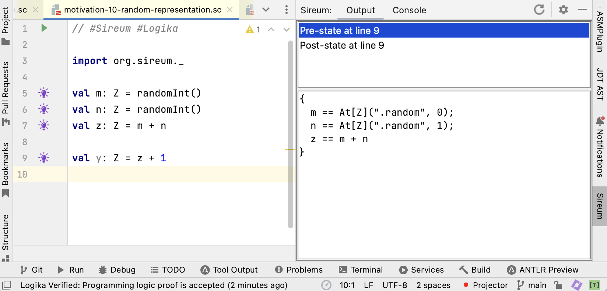
Clicking on the lightbulb at Line 9 shows the facts that Logika knows immediately before the assignment to y. The facts for m and ’n’ illustrate that Logika uses a special marker to represent values returned from its random functions. For m, the At[Z](".random", 0) represents the value returned by the zero’th occurence of random within the current program/method, whereas At[Z](".random", 1) represents the value returned by the first occurence. Note that we wouldn’t have sufficient information if just used a single marker [Z](".random") for all calls to random. We need to keep track of the fact that the random value generated for m is not the same as the random value generated for n. Using a single marker would cause Logika to treat the values for m and ‘n as being identical.
These markers are the user-facing representation of just one of several kinds of “symbolic values” (also called “logic variables”) that Logika uses for automated program reasoning. The common concept that each of these different symbolic values share is that they each represent an arbitrary (unconstrained) value to which constraints can be applied.
Checking Explicit Deductions in Logika’s Proof Language
We previously illustrated how we can manually reason about programs by recording facts about the execution in comments. Below is a fragment of our previously considered example.
val m: Z = randomInt()
val n: Z = randomInt()
val z: Z = m + n
// deduce z == m + n
val y: Z = z - n
// deduce y == z - n
// deduce y == (m + n) - n
// deduce y == m
...
Instead of using informal comments, we can record such deductions as checkable claims using Logika’s proof language as illustrated below.
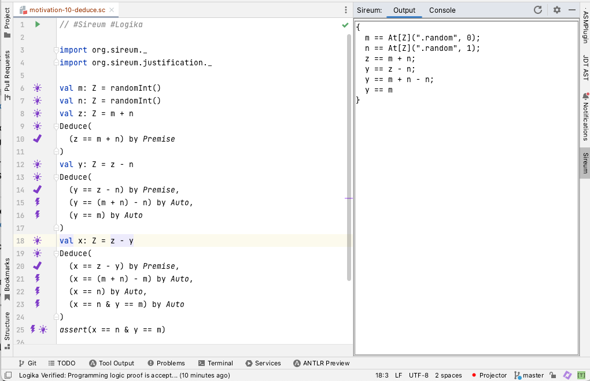
Between each statement in the code, one can list multiple claims in a Deduce proof clause. Each claim, e.g., (y == z - n) is followed by a justification, e.g., by Premise indicating why the claim should be true. While the proof language contains many types of justifications, this example uses only two.
Premiseindicates a claim that is true because (a) it is immediately derivable from the program text without a call to the underlying SMT solvers at the current point, or (b) it has already been explicitly claimed and proved by Logika previously. In most cases, a claimed justified byPremisewill appear in accumulated facts displayed by the lightbulb marker at that particular statement. For example, the claim(y == z - n)at Line 20 appears in the facts listed by the lightbulb annotation at Line 18.Autoindicates that Logika can prove the claim by automated reasoning with calls to the underlying SMT solvers.
A slight variation of the Deduce clauses above further clarifies the principles behind Premise and Auto.
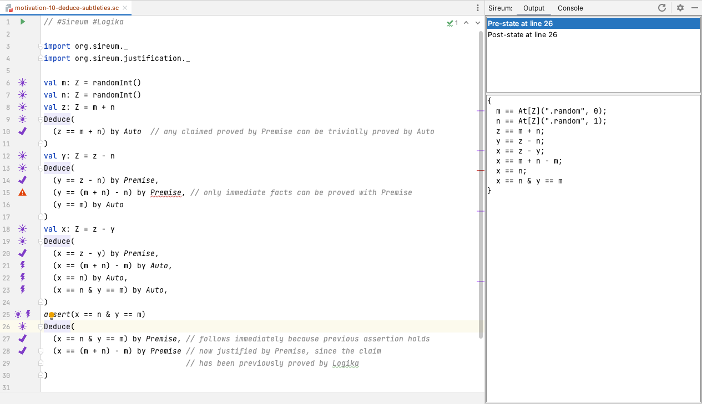
Switching the justification from Premise to Auto at Line 10 illustrates that every claim that can be proved using Premise can also be proved using Auto. In fact, the implementation of Auto will first use the implementation of Premise to see if the claim is already in the set of know facts, e.g., as revealed by the light bulb information, before making calls to the SMT solvers to try to prove the claim.
The error marker at Line 16 illustrates that the reverse does not hold: there are claims proved using SMT deductions via Auto that cannot be proved by Premise.
Line 26 and Line 27 illustrate that immediate facts also arise from other constructs such as correct assertions (not just assignment statements). Clicking the light bulb annotation at Line 26 illustrates how any assertion expression proved to hold by Logika will be added to the known facts (see the last fact in the known facts list). Thus, a claim corresponding to the assertion expression can be proved by Premise at Line 27.
Line 28 illustrates that a claim once proved by Auto (e.g., at Line 21) can now be taken as a Premise. This relates to the displayed known facts (generated from the light bulb at Line 26) indicating that the claimed proved at Line 21 was entered into the list of known facts.
Tracking Facts about Mutable Variables
As discussed previously, reasoning about mutable variables is more difficult because a variable may have different values at different points in the program. Thus, we are typically led to say things like “the value of x at this point in the program”. From another point of view, we may consider that there are different “versions” of the variable – one version for each time the variable is assigned. We now illustrate how Logika reflects this intuition as it tracks facts about mutable variables.
The figure below illustrates the known facts at Line 12 – after all the variables have been declared (assigned assigned a value once), but before any variables (e.g., x and y) have been updated.
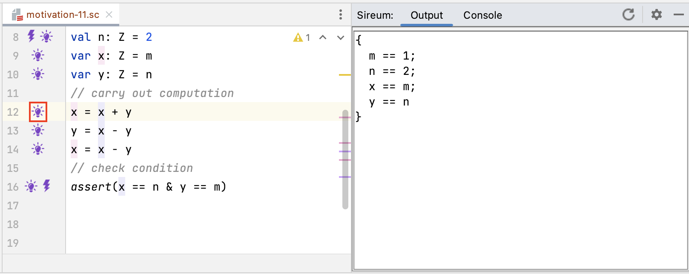
At this point in the program, Logika uses a single name for each variable (the declared variable name).
However, the figure below shows that after a variable is updated (e.g., after the update to x at Line 12), the notation for variable references changes. The known facts display at Line 13 illustrates that Logika uses the notation At(x, 0) to refer to the value associated from the zero’th assignment of x at Line 9 (i.e., the “previous” value of x) and then uses the “regular” name x to refer to the most recent assignment to x at Line 12.
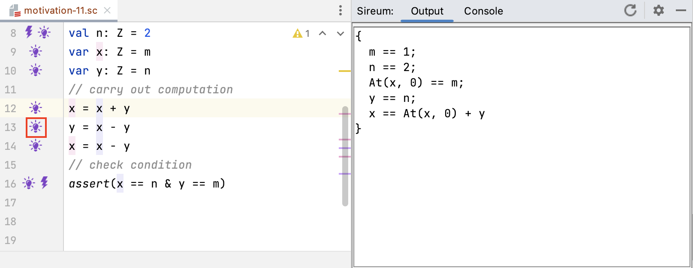
To capture the effect of the assignment to x at Line 12, the known facts display at Line 13 includes the constraint
x == At(x, 0) + y
which indicates that the “new” value of x (indicated by the direct use of x for the most recent version) is equal to the “previous” value of x (indicated by At(x, 0) – the zero’th assignment to x) added to the current value of y (the only value, to this point).
Continuing through the program, the known facts immediately before the execution of the assertion at Line 16 include references to multiple versions of x and y.
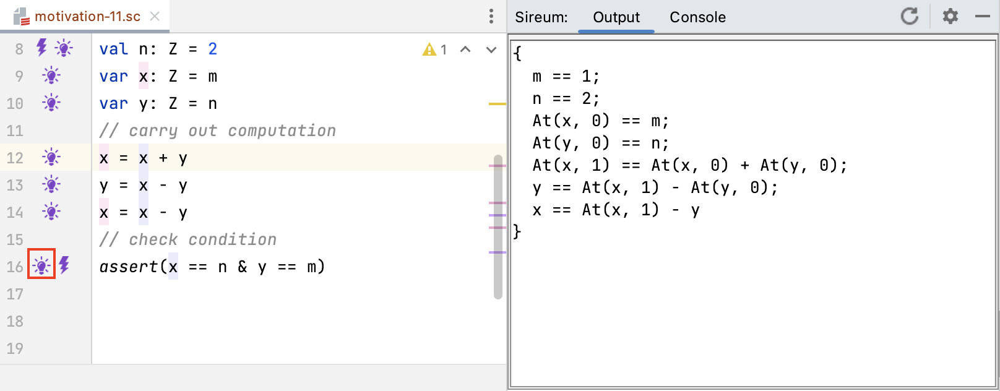
Because we now have an assignment to y at Line 13 and yet another assign to x at Line 14, the constraint presented as
x == At(x, 0) + y
in the known facts display at Line 13 now is now presented as
At(x,1) == At(x, 0) + At(y, 0)
At(x,1) refers to the 1’th version of x assigned at Line 12,
At(x,0) refers to the 0’th version of x assigned at Line 9, and
At(y,0) refers to the 0’th version of y assigned at Line 10.
The constraint
x == At(x, 1) - y
captures the effect of the assignment at Line 14 where the current value of x is computed from the previous version of x (the 1’th version assigned at Line 12) and the current version of y.
Note: there are other possible notations that Logika could use to keep track of different versions of variables. For example, it could use line numbers where variables are assigned to keep track of different versions. Because we sometimes want to use the At(..,..) notation to reference previous versions of variables in Logika proof blocks, referencing in terms of the “0’th”, “1’th”, etc. assignment is less brittle (less subject to change) when the program is subsequently edited (e.g., lines are inserted or deleted).
In the figure below, the sequent displayed in the summoning for the assertion verification at Line 16 (viewed by clicking on the light bulb at Line 16) illustrates that when Logika sends constraints to the SMT solver, it converts the At(..,..) into variable references based on line numbers.
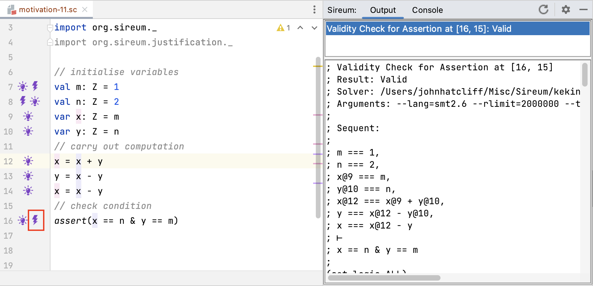
For example, the constraint for the assignment at Line 12 presented as
At(x,1) == At(x, 0) + At(y, 0)
in the known facts display becomes
x@12 == x@9 + y@10
when passed to the SMT solvers.